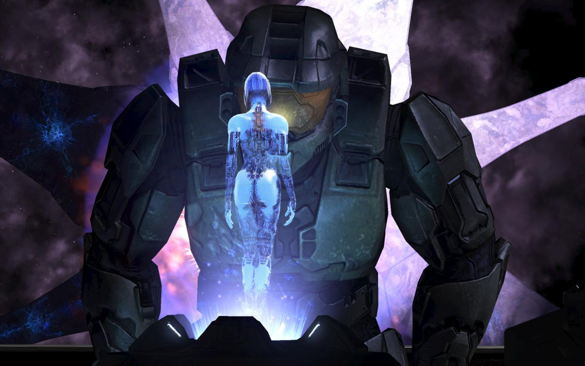

Halo 3 is one of my favorite games of all time. I have never been more excited for a video game than I was for Halo 3.
I was already a huge fan of the two previous installments and there was so much hype brought on by some awesome trailers
and marketing. My expectations were so high for this game and it still surpassed them. I love all of the Halo games made by the original team Bungie.
Its also probably the series that got me into video games in general. Games such as Bioshock. I had loved the Halo storyline.
so I was always looking for games with a good story and Bioshock had an amazing story. So dark and original especially for a video game.
And we can't talk about Bioshock without mentioning the crazy unexpected twist at the end. WOW!
I started playing guitar when I was around twelve years old and I have loved it ever since. One of the bands that I got
really interested in at the same time that I got started playing guitar was Metallica. I had already loved Pink Floyd but
I was becoming obsessed with Metallica also. All of Metallica's songs have a lot of different guitar parts so they were great
for getting better at guitar. In high school I would practice for hours each day. I still play and I am always trying to improve my
guitar and music knowledge.
I love writing my own music. Me and one of my really good friends both wanted to play and create music with a drummer. And after
looking around on different websites and meeting with many different people we eventually found a super talented drummer from
San Diego. We wrote a lot of different songs and had a lot of fun doing it. you can hear one of our songs in the video to the right.
I love many different bands, some of them are Pink Floyd, Pantera, Creedence Clearwater, Nirvana, Alice in Chains, and many more.